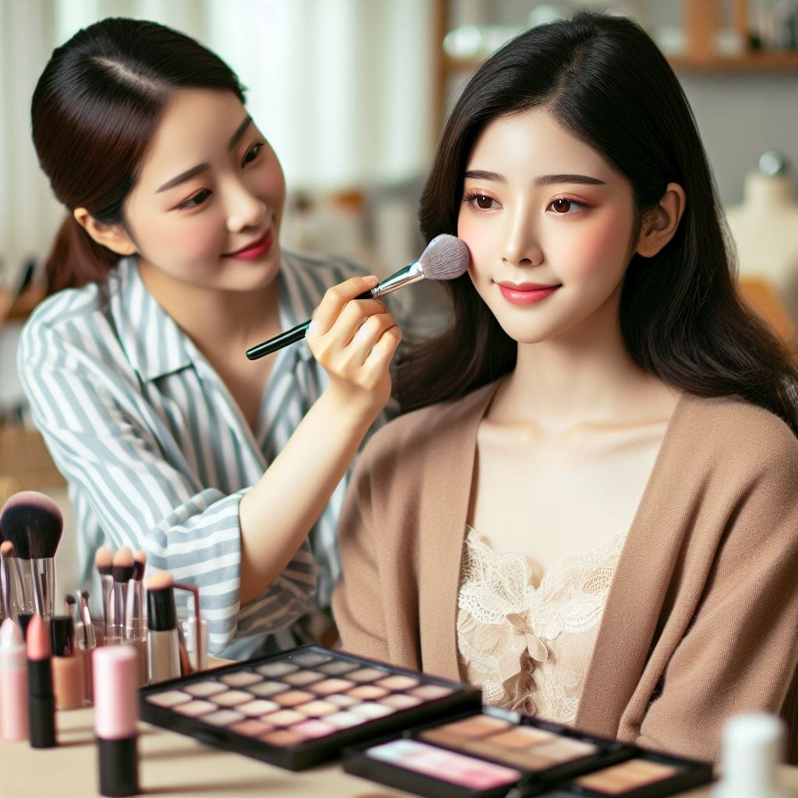

BEAUTICIAN
What is a Beautician?
A beautician is a professional who provides beauty treatments, such as treating the customer's skin, doing their nail, styling their hair and putting on their makeup.
Types Of Beautician
Cosmetologist: A cosmetologist is a professional responsible for providing personal care services. It may include caring for clients’ hair, skin and nails. His or her everyday tasks include shampooing, cutting, styling, colouring, curling or straightening people’s hair. A cosmetologist uses cosmetics to enhance or change actor's or performer's appearance.
Hair Stylist: A hairstylist is a makeover professional responsible for enhancing client's facial appearance with hair cuts, colouring and styling. He or she stays updated about the new technology involved in enhancing hairstyles and trends in the market. A hairstylist keeps experimenting with new haircuts and styles to provide their clients with numerous options to select before finalising one.
Manicurist: A manicurist is a professional responsible for shaping and styling a person’s nails. He or she possesses proficiency in cleaning nails, adding shine to them and giving them a perfect shape. A manicurist recommends tips and techniques to his or her clients to take care of their nails.
Spa Therapist: A spa therapist is responsible for delivering a variety of spa services. It includes body treatments, massages, facials, waxing, manicure and pedicure. He or she is required to maintain equipment and sample inventory of products. A spa therapist acknowledges and responds to relevant customer queries to fulfil their expectations. Read further to know more about how to become a Beautician in India and how to become a professional beautician
How to become beautician
1. School level preparation:
If anybody wants to work in the medical field, then that person needs to pass 10+2 with science and then he or she go for the MBBS degree with specialization.
2. For other cases, after the 10+2 qualification, candidates need to be prepared and clear the entrance examinations like CUCET to get the admission in the desired courses in the desired university.The course curriculum of diploma courses is specific and particular as compared to the vast syllabus in master’s and bachelor’s courses, so diplomas are both cost-effective and save time.
• Diploma courses can be of a duration of 1 year whereas PG diploma courses can vary between 1 to 2 years.
• Diploma courses are generally preferred for those students who want to enter the job sector soon.
• Just as certificate courses, diploma courses offer you a variety of specializations to choose from.
4. Apply for a course
Beautician courses are offered as Certificates, Diplomas, and also as degree courses in both online and offline modes.
• The top specializations in beautician courses include fields like cosmetology, beauty care, hairstyling, airbrushing, stage makeup, and so on.
• Beauty Therapy Training Course
• Makeup & Nails Online Course
5. Pursue a Certificate Course
The certificate programs in beautician courses are offered both through online and offline modes. Due to the current situation, online courses are more popular than offline ones, but we will discuss both of them in detail. The duration of these courses can vary from a few hours to a few months.